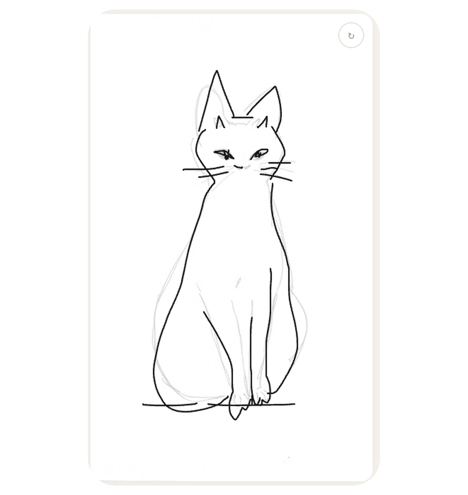
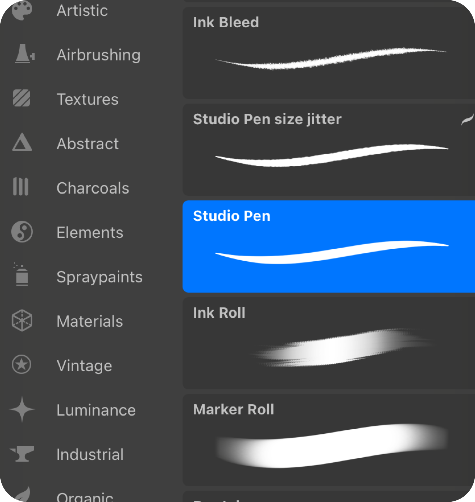
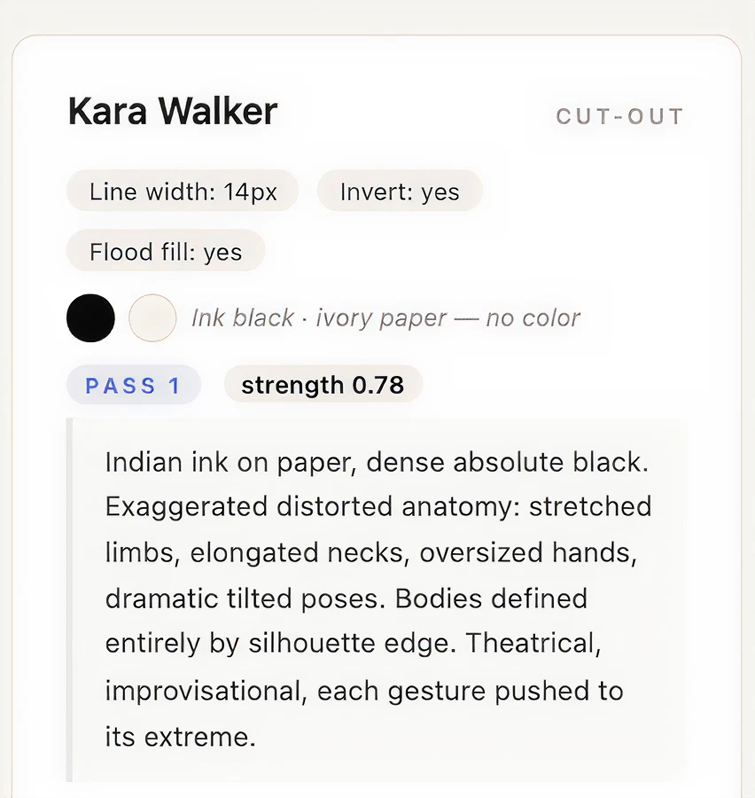
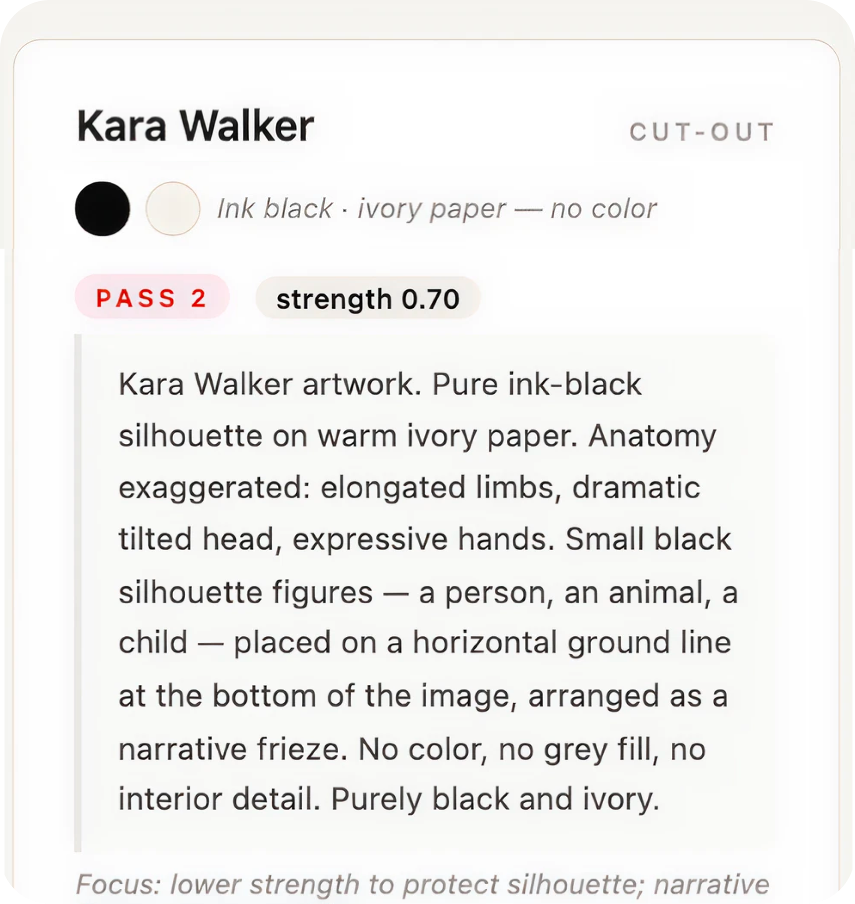
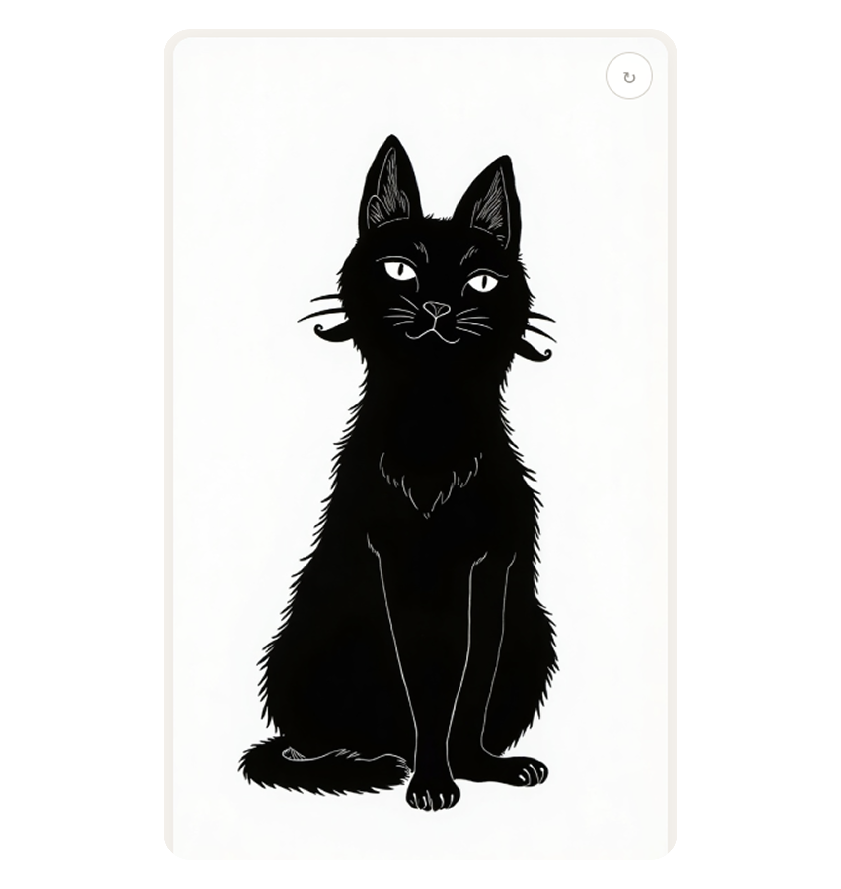

Artifakt uses a two-pass image-to-image pipeline. The user draws a sketch; that sketch is preprocessed per artist, then sent through two sequential API calls to fal.ai’s Flux Dev model. Pass 1 establishes gesture and material quality. Pass 2 applies the artist’s full visual identity on top.

Raw user sketch on the canvas — loose pencil lines, no colour.Input
Canvas drawing, 768px wide

Sketch cleaned & line-weight adjusted per artist before the model sees it. Think of it as defining brushes in Procreate — but this time to support the unique gesture of each artist.Pre-process
Line width, invert, flood fill — per artist

Gesture + material established — strong form, no artist colour yet.Pass 1
Flux Dev img2img · no artist name · strength 0.75–0.82

Artist identity applied — colour, motifs and full style on top.Pass 2
Flux Dev img2img · artist name + colour + motifs · strength 0.70–0.90

Final artwork shown on Screen 2.Output
Displayed on Screen 2
Strength is how much the model departs from the input image.
0.0 returns the input untouched; 1.0 ignores it
entirely. Higher strength means more artistic transformation but looser
sketch fidelity.
Diffusion models start from random noise (the seed), so two identical prompts produce different results every time. That variance compounds across two passes. The regenerate button on the canvas lets users reroll.
fal-ai/flux/dev/image-to-image. 28 inference steps, guidance
scale 3.5. No LoRA fine-tuning — style is driven entirely through
prompting. LoRA is a future option once the artist roster is validated.
Two API calls per artist per generation. All five artists are generated in parallel when Screen 2 loads. Regenerating one artist is two fresh calls for that artist only.